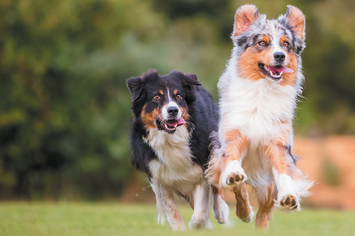
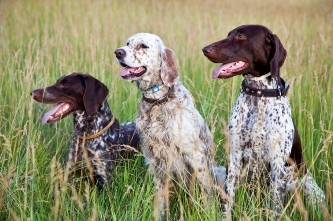
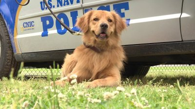
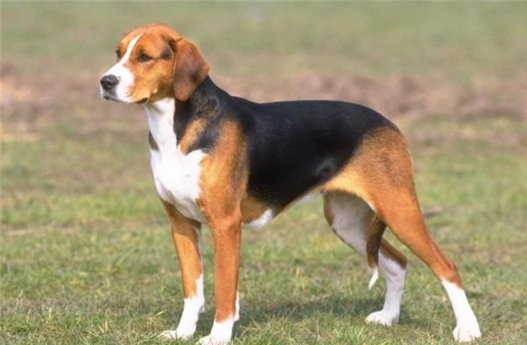
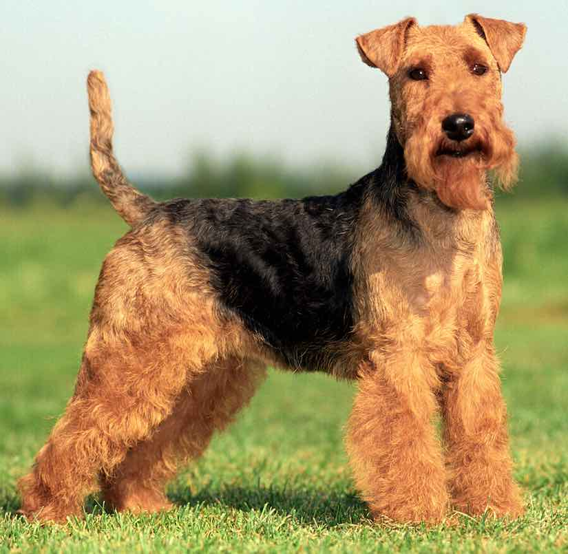
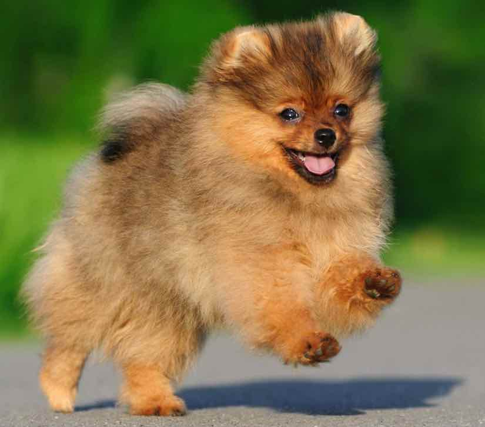

You should get a Cat!

These curious critters are super cute while also being very independant. If you're looking for a companion that doesn't require constant supervision, but is also there when you need something to snuggle with, look into adopting a cat today!
You should get a Herding dog!

Easily trained to fetch, Energetic Herding dogs such as Australian Cattle Dog, Australian Shepherds, Border Collies, and Old English Sheepdogs are awesome dogs, however, they also require a lot of exercise and space to run around.
You should get a Sporting dog!

Amazing instincts and tracking capabilities, Sporting dogs such asBrittanys, English Setters, Golden Retrievers, and Pointers are wonderful companions. However, they require a lot of exercise
You should get a Non-Sporting dog!

This Catch-all group of dogs include a wide variety of breeds such as the American Eskimo Dog, Dalmation, Poodle, and the French Bulldog. There are a wide variety of breeds to love!
You should get a working dog!

Known for their strength and intilegence, working dogs such as German Shepherds, Siberian Huskys, Mastiffs, Akitas, Boxers, and Great Danes provide excelent friends, and protectors all in one (albeit large) package!
You should get a Hound!

Equipped with a fantastic sense of smell and great stamina, Hounds such as Beagle, Basset Hound, Greyhound, and the Norwegian Elkhound are found eveerywhere from the race-track, to detective crime scenes, and even your living-room!
You should get a Terrier dog!

Energetic and love to dig, Terriers such as the australien, Yorkshire, and Bull are excellent companions to the energetic and athletic owner. They don't tend to lay well with other pets, however.
You should get a Toy dog!

These tiny dogs tend to outlive all their larger counterparts, and come in a cute, easy to take care of bundle.Pugs, Poodles, and Pomeranians all fit into the Toy Breed group.